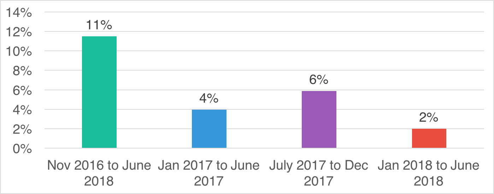
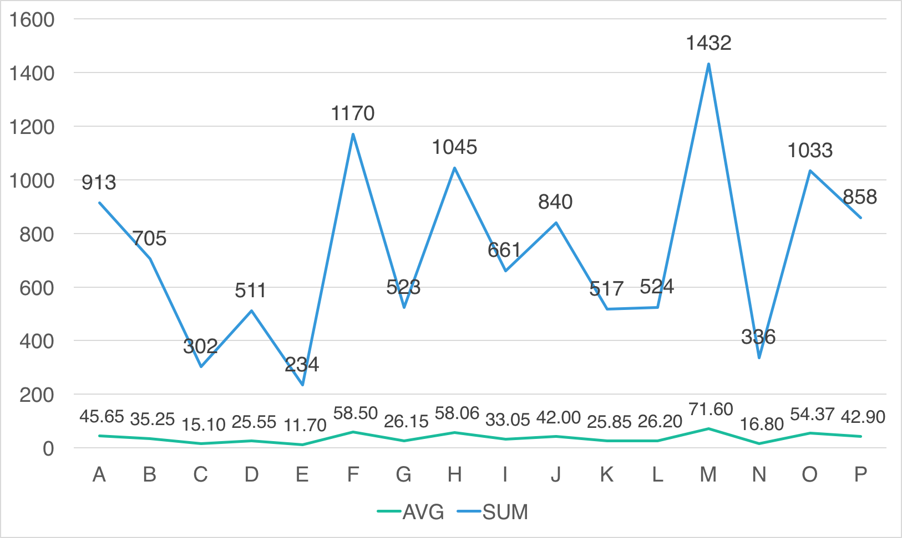
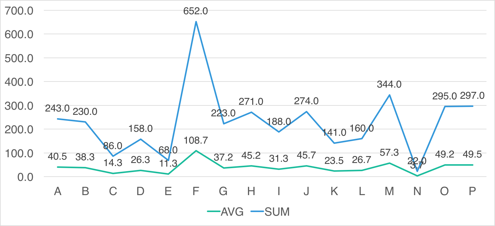
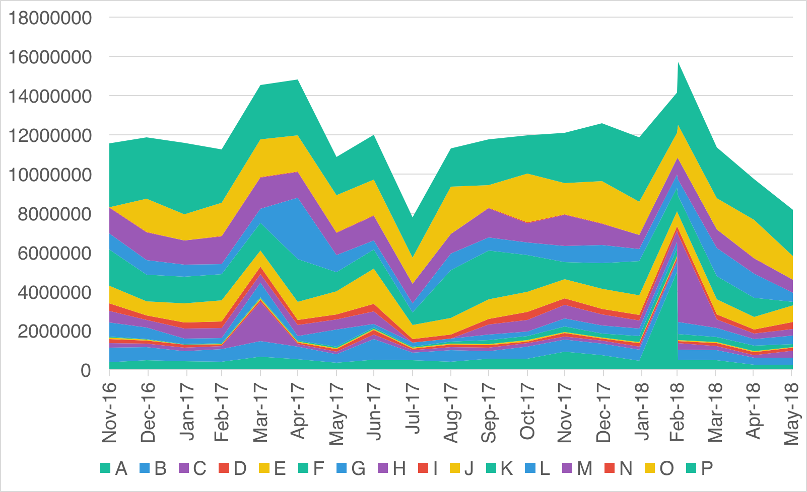
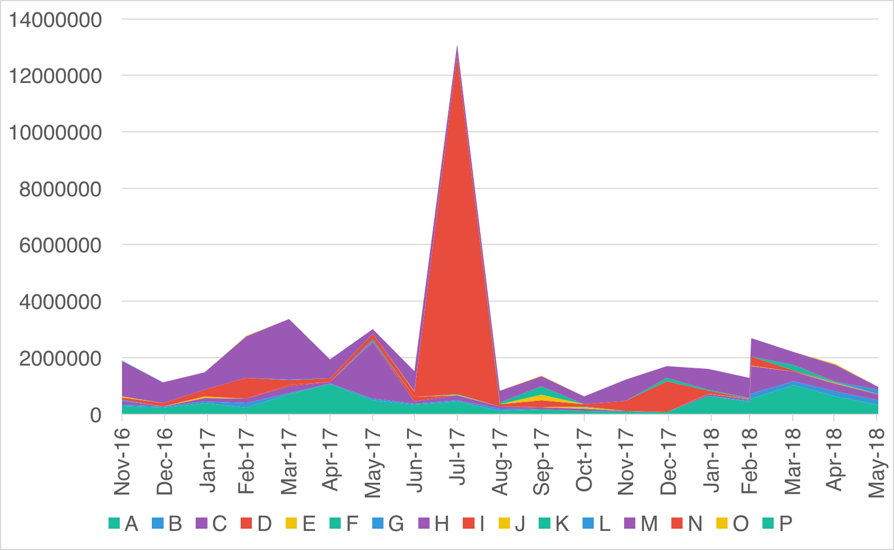
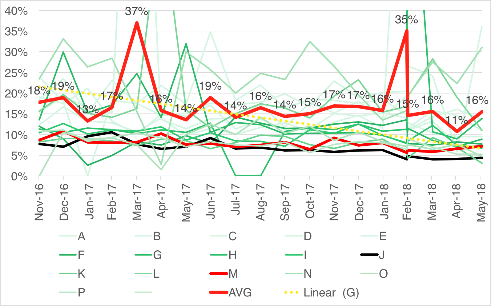

Melissa Cheater / @mmbc
Digital Content Manager, Communications & Public Affairs
Lecturer, Faculty of Information & Media Studies
Student, Department of Computer Science
Alumna, Media & Public Interest ‘06
Western University 🇨🇦 / @westernu / @westernuniversity
As we roll this out, you'll see less public content like posts from businesses, brands, and media. And the public content you see more will be held to the same standard -- it should encourage meaningful interactions between people.
- Mark Zuckerberg, January 11 2018


But what about us?
But actually ...
- 16 schools
- 3,431,970 followers
- 20 months
- 11,604 posts
Followers by Month
Followers by Month (Combined)

Follower Growth by Quarter
- Average: 0.6% growth / month
- High End: ~1%
J, H, I - Low End: <0.25%
N, E, O, P, K
Posts by Month
Total Posts & Average Monthly Posts
Total Posts & Average Monthly Posts (2018)
- Average: 38 posts / month (33)
- High End: 45 - 55 (108)
F, M, P, O, J, H, A* - Low End: 3 - 15
C, E, N - Middle of the Pack: 25 - 35
B, G, I, L, D, K
Reach by Month
Reach by Month (Combined)

Reach by Quarter

- Average: 849,050
- High End: 1.5M+
P, A, O - Low End: <500,000
C, G, I, F, D, E, N
Organic Reach by Month
Organic Reach by Month (Combined)
Organic Reach by Quarter

Organic Reach by Quarter
5.34% decrease (Jan - June 2017 vs 2018)
Organic Reach (2018)
- Average: 739,500 / month
- High End: 1,000,000+ / month
P, O, A, H, K - Low End: < 250,000 / month
C, D, E, N
Paid Reach by Month
Paid Reach by Month (Combined)
Are we boosting?

- Average: 7.66/16 boosting in 2018.
- Anecdotal: Boost increases both paid and organic.
Reach / Post as % of Followers
- Average: 17% (vs 19%)
- High End: 40%+
A, C. - Low End: <10%
O, P, K, J. - * Paid + Organic Reach combined
Organic Reach / Post
- Average: 19,030
- High End: 30,000+
P, K, O, L. - Low End: <10,000
I, D, E, F, N.
Organic Reach / Post as % of Followers
- Average: 13%
- High End: 20%+
A, H, N, C. - Low End: <10%
G, I, O, P, M, K, J.
Average Organic Reach / Post as % of Followers
- May was not good for us.
- We were stronger in June 2018 than June 2017.
Benchmarks
- 38 posts / month
- Followers growing at 0.6%
- Total Reach: 849,050 / month
- Organic Reach: 739,500 / month
- Average Total Reach / Post: 22,531
- Average Total Reach as % of Followers / Post: 17%
- Average Organic Reach / Post: 19,030
- Average Org. Reach as % of Followers / Post: 13%
Benchmarks
- 25 posts / month
- Followers growing at 0.6%
- Total Reach: 849,050 / month
- Organic Reach: 739,500 / month
- Average Total Reach / Post: 22,531
- Average Total Reach as % of Followers / Post: 17%
- Average Organic Reach / Post: 19,030
- Average Org. Reach as % of Followers / Post: 13%
Recipe for Reach
- F, M, P, O, J, H & A are working the hardest
- C, E & N are posting the least
- J, H & I are growing the fastest
- 7-8 / 16 are boosting
- P, A & O are reaching the most
- P, O, A, H & K are reaching the most organic
- A & C are reaching more of their followers (40% with paid, 20% organic)
- H & N are matching that 20% organic, without 20% organic.
- P, K, O, L are reaching 30,000+ / post, for free.
Recipe for Reach
- Grow your followers.
- Optional: Pay to play.
- Post less? Maybe, maybe not.
- Content & Community are royal.
Bow to Herbert, Nancy and Charlene ... and Alfred?
Organic reach is down 5.34% in 2018, but looking up.
</presentation>
Melissa Cheater / @mmbc
Digital Content Manager, Communications & Public Affairs
Lecturer, Faculty of Information & Media Studies
Student, Department of Computer Science
Alumna, Media & Public Interest ‘06
Western University 🇨🇦 / @westernu / @westernuniversity